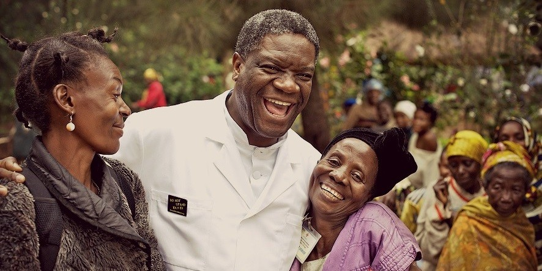

Dr. Denis Mukwege
The man who mends women

Dr Denis Mukwege is a gynaecologist and Nobel Peace laureate from D.R.Congo.
He has become the world’s leading specialist in the treatment of wartime sexual violence and a
global campaigner against the use of rape as a weapon of war.
Here's a time line of Dr. Mukwege's life:
- 1955: Born in D.R.Congo
- 1983: Finished medical studies at University of Burundi
- 1989: Finished his gynaecology and obstetrics studies at the University of Angers
- 1999: Founded the Panzi Hospital
- 2008: The non-profit Panzi Foundation DRC was created in order to support the work of Panzi Hospital
- 2012: Mukwege gave a speech at the United Nations where he condemned the mass rape occurring in the Democratic Republic of the Congo
- 2012: Four armed men attacked his residence while he was not home
- 2012: After the assassination attempt, Mukwege went into exile in Europe
- 2013: Mukwege returned to Bukavu
- 2015: Earned a PhD from Université Libre de Bruxelles
- 2018: Was awarded the Nobel Peace Prize with Nadia Murad
If you have time, you should read more about this extraordinary man on his Wikipedia entry.